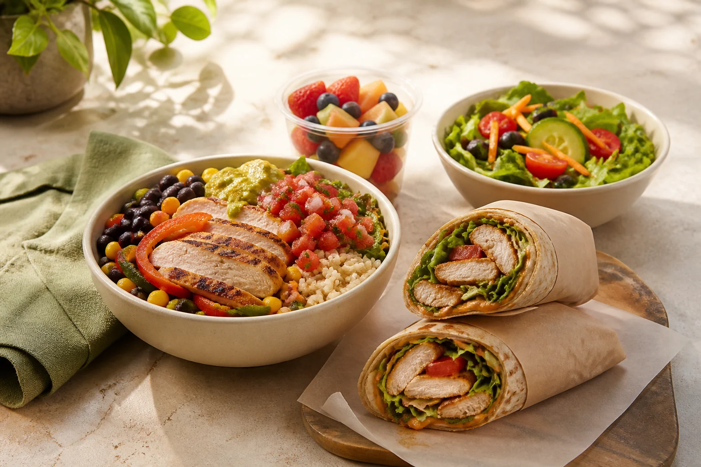

A smarter fast-food shortlist
Healthy fast-food meal finder
Tell us if you are cutting, bulking, prioritizing protein, or balancing more than one goal. Five clear questions rank 77 real menu items from 15 restaurants.

Build your shortlist
Start with what matters today
Select more than one goal when you need to. Complete nutrition data is shown first.
Values are approximate standard builds from published chain nutrition information. They change with recipe updates, regional menus and how your order is actually assembled, so check the chain’s current figures before relying on a number. A dash means the chain does not publish that value in a form we would stand behind.
The same meals, ranked across every chain
The quiz answers one question at a time. These are the standing lists behind it: all 77 meals from 15 chains, sorted the ways people actually ask for them. Every figure is the chain's published standard build.
Highest-protein fast food meals
Ranked across all 15 chains. Everything here clears 25 g, and the leaders roughly double it. 12 items.
| Meal | Restaurant | Calories | Protein | Fibre | Sodium |
|---|---|---|---|---|---|
| Footlong Rotisserie Chicken | Subway | 640 | 58 g | 8 g | 1,280 mg |
| High-Protein Bowl | Chipotle | 540 | 46 g | 14 g | — |
| Chicken Burrito Bowl with rice and beans | Chipotle | 700 | 45 g | 13 g | — |
| Chick-fil-A Cool Wrap | Chick-fil-A | 660 | 43 g | 14 g | 1,420 mg |
| 5 Blackened Tenders | Popeyes | 280 | 43 g | 0 g | 920 mg |
| Grilled Breast with green beans and corn | KFC | 345 | 41 g | 5 g | 1,040 mg |
| Teriyaki Chicken with Super Greens | Panda Express | 365 | 39 g | 5 g | 730 mg |
| Original Recipe Breast | KFC | 390 | 39 g | 1 g | 1,190 mg |
| Regular Chicken Caesar Wrap | Jersey Mike’s | 640 | 39 g | 4 g | 1,560 mg |
| Grilled chicken over greens, light dressing | CAVA | 420 | 38 g | 6 g | — |
| Grilled Nuggets, 12 count | Chick-fil-A | 200 | 38 g | 0 g | 660 mg |
| Kentucky Grilled Chicken Breast | KFC | 210 | 38 g | 0 g | 710 mg |
Fast food under 400 calories
Sorted lightest first. Several are sides rather than full meals, which is worth knowing before you order one on its own. 12 items.
| Meal | Restaurant | Calories | Protein | Fibre | Sodium |
|---|---|---|---|---|---|
| Apple Slices | McDonald’s | 15 | 0 g | 0 g | 0 mg |
| Green Beans | KFC | 25 | 1 g | 2 g | 260 mg |
| Ten Vegetable Soup, cup | Panera | 80 | 3 g | 4 g | 590 mg |
| Super Greens side | Panda Express | 90 | 6 g | 5 g | 260 mg |
| Grilled Nuggets, 8 count | Chick-fil-A | 130 | 25 g | 0 g | 440 mg |
| Original Recipe Drumstick | KFC | 130 | 12 g | 0 g | 430 mg |
| Rolled & Steel-Cut Oatmeal | Starbucks | 160 | 5 g | 4 g | 125 mg |
| Kale Crunch Side | Chick-fil-A | 170 | 3 g | 2 g | 250 mg |
| Chicken Soft Taco | Taco Bell | 170 | 12 g | 2 g | 470 mg |
| 3 Blackened Tenders | Popeyes | 170 | 26 g | 0 g | 550 mg |
| Egg & Cheese Wake-Up Wrap | Dunkin’ | 180 | 7 g | 0 g | 470 mg |
| String Bean Chicken Breast | Panda Express | 190 | 14 g | 4 g | 590 mg |
Fast food with the most fibre
Fibre is the number most fast-food menus are thin on, and the one that most changes whether a meal holds you until the next one. 12 items.
| Meal | Restaurant | Calories | Protein | Fibre | Sodium |
|---|---|---|---|---|---|
| Veggie Bowl with guacamole | Chipotle | 640 | 15 g | 16 g | — |
| Sofritas Bowl | Chipotle | 620 | 23 g | 15 g | — |
| High-Protein Bowl | Chipotle | 540 | 46 g | 14 g | — |
| Chick-fil-A Cool Wrap | Chick-fil-A | 660 | 43 g | 14 g | 1,420 mg |
| Chicken Burrito Bowl with rice and beans | Chipotle | 700 | 45 g | 13 g | — |
| Harissa Avocado bowl | CAVA | 730 | 28 g | 12 g | — |
| Turkey Chili, bowl | Panera | 340 | 26 g | 11 g | 1,140 mg |
| Veggie Power Menu Bowl | Taco Bell | 430 | 12 g | 11 g | 1,010 mg |
| Black Bean Burrito | Taco Bell | 420 | 13 g | 11 g | 1,000 mg |
| High-Protein Salad | Chipotle | 470 | 36 g | 10 g | — |
| Steak Salad, no rice | Chipotle | 405 | 32 g | 9 g | — |
| Footlong Rotisserie Chicken | Subway | 640 | 58 g | 8 g | 1,280 mg |
Lowest-sodium options
Only meals where the chain publishes a sodium figure. A missing number is not a low one, so nothing unpublished is ranked here. 12 items.
| Meal | Restaurant | Calories | Protein | Fibre | Sodium |
|---|---|---|---|---|---|
| Apple Slices | McDonald’s | 15 | 0 g | 0 g | 0 mg |
| Rolled & Steel-Cut Oatmeal | Starbucks | 160 | 5 g | 4 g | 125 mg |
| Kale Crunch Side | Chick-fil-A | 170 | 3 g | 2 g | 250 mg |
| Super Greens side | Panda Express | 90 | 6 g | 5 g | 260 mg |
| Green Beans | KFC | 25 | 1 g | 2 g | 260 mg |
| Original Recipe Drumstick | KFC | 130 | 12 g | 0 g | 430 mg |
| Grilled Nuggets, 8 count | Chick-fil-A | 130 | 25 g | 0 g | 440 mg |
| Eggs & Cheddar Protein Box | Starbucks | 460 | 22 g | 5 g | 450 mg |
| Chicken Soft Taco | Taco Bell | 170 | 12 g | 2 g | 470 mg |
| Grilled Teriyaki Chicken | Panda Express | 275 | 33 g | 0 g | 470 mg |
| Egg & Cheese Wake-Up Wrap | Dunkin’ | 180 | 7 g | 0 g | 470 mg |
| Hamburger | McDonald’s | 250 | 12 g | 1 g | 510 mg |
Every vegetarian option we track
No meat or fish in the standard build. Ordered by protein, because that is the number these meals most often give up. 20 items.
| Meal | Restaurant | Calories | Protein | Fibre | Sodium |
|---|---|---|---|---|---|
| Sofritas Bowl | Chipotle | 620 | 23 g | 15 g | — |
| Eggs & Cheddar Protein Box | Starbucks | 460 | 22 g | 5 g | 450 mg |
| Spinach, Feta & Egg White Wrap | Starbucks | 290 | 20 g | 3 g | 840 mg |
| Veggie Sub, regular | Jersey Mike’s | 520 | 20 g | 5 g | 1,090 mg |
| Shroomami | Sweetgreen | 635 | 18 g | — | — |
| 6-inch Veggie Delite | Subway | 320 | 17 g | 4 g | 600 mg |
| Veggie Bowl with guacamole | Chipotle | 640 | 15 g | 16 g | — |
| Egg & Cheese English Muffin | Dunkin’ | 340 | 14 g | 1 g | 650 mg |
| Black Bean Burrito | Taco Bell | 420 | 13 g | 11 g | 1,000 mg |
| Super Green Goddess | Sweetgreen | 465 | 12 g | — | — |
| Veggie Power Menu Bowl | Taco Bell | 430 | 12 g | 11 g | 1,010 mg |
| Mediterranean Greens with Grains, whole | Panera | 540 | 11 g | 7 g | 820 mg |
| Egg & Cheese Wake-Up Wrap | Dunkin’ | 180 | 7 g | 0 g | 470 mg |
| Super Greens side | Panda Express | 90 | 6 g | 5 g | 260 mg |
| Red Beans & Rice, regular | Popeyes | 230 | 6 g | 5 g | 680 mg |
| Rolled & Steel-Cut Oatmeal | Starbucks | 160 | 5 g | 4 g | 125 mg |
| Kale Crunch Side | Chick-fil-A | 170 | 3 g | 2 g | 250 mg |
| Ten Vegetable Soup, cup | Panera | 80 | 3 g | 4 g | 590 mg |
| Green Beans | KFC | 25 | 1 g | 2 g | 260 mg |
| Apple Slices | McDonald’s | 15 | 0 g | 0 g | 0 mg |
Every plant-based option we track
No animal products in the standard build. Check preparation locally: shared fryers and dairy-based sauces are the usual surprises. 9 items.
| Meal | Restaurant | Calories | Protein | Fibre | Sodium |
|---|---|---|---|---|---|
| Sofritas Bowl | Chipotle | 620 | 23 g | 15 g | — |
| Shroomami | Sweetgreen | 635 | 18 g | — | — |
| Veggie Bowl with guacamole | Chipotle | 640 | 15 g | 16 g | — |
| Black Bean Burrito | Taco Bell | 420 | 13 g | 11 g | 1,000 mg |
| Super Greens side | Panda Express | 90 | 6 g | 5 g | 260 mg |
| Rolled & Steel-Cut Oatmeal | Starbucks | 160 | 5 g | 4 g | 125 mg |
| Ten Vegetable Soup, cup | Panera | 80 | 3 g | 4 g | 590 mg |
| Green Beans | KFC | 25 | 1 g | 2 g | 260 mg |
| Apple Slices | McDonald’s | 15 | 0 g | 0 g | 0 mg |
Breakfast items worth ordering
Served on the breakfast menu. Ordered by protein, since that is what decides whether a breakfast lasts past mid-morning. 10 items.
| Meal | Restaurant | Calories | Protein | Fibre | Sodium |
|---|---|---|---|---|---|
| Egg White Grill | Chick-fil-A | 290 | 26 g | 1 g | 820 mg |
| Sourdough Breakfast Sandwich | Dunkin’ | 490 | 24 g | 2 g | 1,180 mg |
| Eggs & Cheddar Protein Box | Starbucks | 460 | 22 g | 5 g | 450 mg |
| Spinach, Feta & Egg White Wrap | Starbucks | 290 | 20 g | 3 g | 840 mg |
| Turkey Bacon & Egg White Sandwich | Starbucks | 230 | 17 g | 3 g | 550 mg |
| Egg McMuffin | McDonald’s | 310 | 17 g | 2 g | 770 mg |
| Egg & Cheese English Muffin | Dunkin’ | 340 | 14 g | 1 g | 650 mg |
| Turkey Sausage Wake-Up Wrap | Dunkin’ | 230 | 12 g | 0 g | 600 mg |
| Egg & Cheese Wake-Up Wrap | Dunkin’ | 180 | 7 g | 0 g | 470 mg |
| Rolled & Steel-Cut Oatmeal | Starbucks | 160 | 5 g | 4 g | 125 mg |
Looking for one restaurant rather than a ranking? Each chain has its own guide: CAVA, Chick-fil-A, Chipotle, Dunkin’, Jersey Mike’s, KFC, McDonald’s, Panda Express, Panera, Popeyes, Starbucks, Subway, Sweetgreen, Taco Bell, Wendy’s .